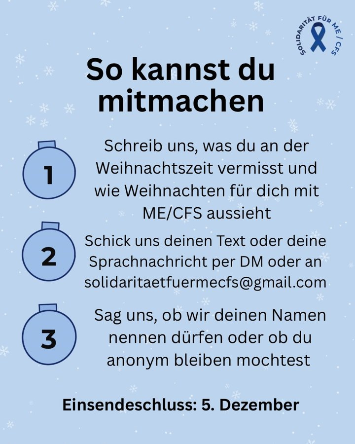

7.–8.
Dezember 2026
Adventstand
Mitmachen bis 5. Dezember
Weihnachtsaktion: „Weihnachten mit ME/CFS bedeutet für mich …“
Mo., 7. Dez. · 16–21 Uhr
Di., 8. Dez. · 15–21 Uhr
Herrengasse Graz, Höhe Landhaus
Bei unserem Adventstand lesen wir Gedanken und Geschichten von Menschen mit ME/CFS vor. So kannst du mitmachen:
- 1Schreib uns, was du an der Weihnachtszeit vermisst und wie Weihnachten für dich mit ME/CFS aussieht.
- 2Schick uns deinen Text oder deine Sprachnachricht per Instagram-DM oder an solidaritaetfuermecfs@gmail.com.
- 3Sag uns, ob wir deinen Namen nennen dürfen oder ob du anonym bleiben möchtest.
